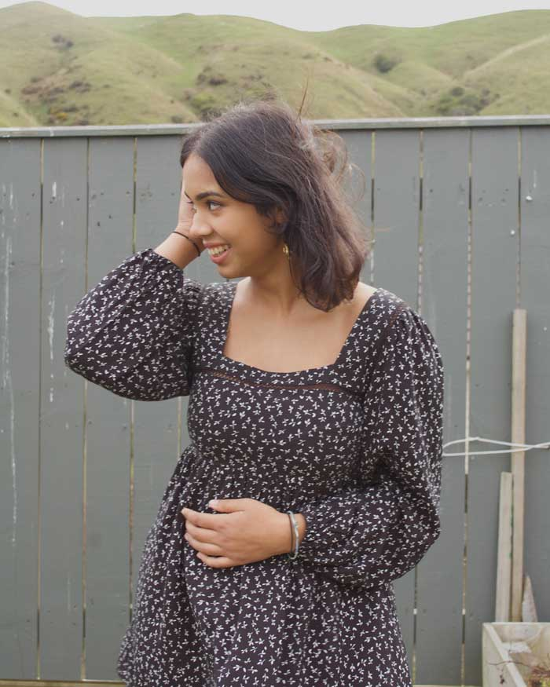

17/02/2019
Style is the only thing you can’t buy. It’s not in a shopping bag, a label, or a price tag. It’s something reflected from our soul to the outside world—an emotion.
I am a big believer in the little details in every day.
Y’know, the moments that just instantly pick you up even when you didn’t realise you needed picking up?
Things like takeout coffee or a slick of bright lipstick.
And, things like a damn good outfit that just makes you want to give ya self a high five every time you catch your reflection in a shop window.
Which, I guess, is where this post comes in. The current fashion trends doing the rounds on Instagram and on the high street, that… well, lift my mood.
The four trends and products that add a little punch of positivity into my day and make me smile over and over again..
Here goes….
They were kinda cute in 2016, even cuter for 2017 and HELLO THEY ARE JUST WONDERFUL IN 2018. They have sequins! And tassels! And motivational slogans!
I know it sounds like the sort of thing people say but don’t actually mean, but my mood is genuinely lifted when I’m wearing something that says something empowering on it.
It’s like every time I look down I get a little reminder to keep on living my best life, and I’m absolutely down for clothes with that kinda positivity.
You might have spied from my Instagram that I’m currently having a bit of a love affair with wearing matchy-matchy colours. Pink on pink? YAS. Blue on blue? YAS. Heck, I might even go wild this week and don a yellow on yellow look (and then just pray to the style gods that I don’t look like an actual banana tottering about Wellington town centre).
Anyway yeah, matching colours is my new happy place. Some gals live for feeling cool and chic in head-to-toe monochrome, but my mood is brightest, when, y’know, I look bright.
Since discovering that you can in fact wear various shades of the same colour within the same outfit (groundbreaking, I know), I have a bazillion new outfit combinations within my wardrobe and it is v v exciting.
I’ve said about 5723785367 times before that putting on a blazer instantly makes me feel like I’ve got my life together. Wearing jeggings and a baggy jumper? Throw a blazer on. Wearing maternity dungarees and your boyfriend’s t-shirt? Throw a blazer on.
This spring the high street seems to have gone absolutely wild for the humble baby pink blazer (big fan girl over here), and the extra-sassy yellow blazer. Both are just the bomb at making a really boring cba outfit look and feel like you mean business.
Whilst this trend has been going strong for about… oooh, 12 months now, it’s really amped up its game for 2018. THEY ARE EVERYWHERE. And now you can get them in every shade of the rainbow. Huzzah!
They’re a really quite wonderful way to snazz up an outfit without spending much money. And, if you’re feeling quite overwhelmed as to which colour to go for – my most worn are easily my red pair, swiftly followed by my black and white pairs.